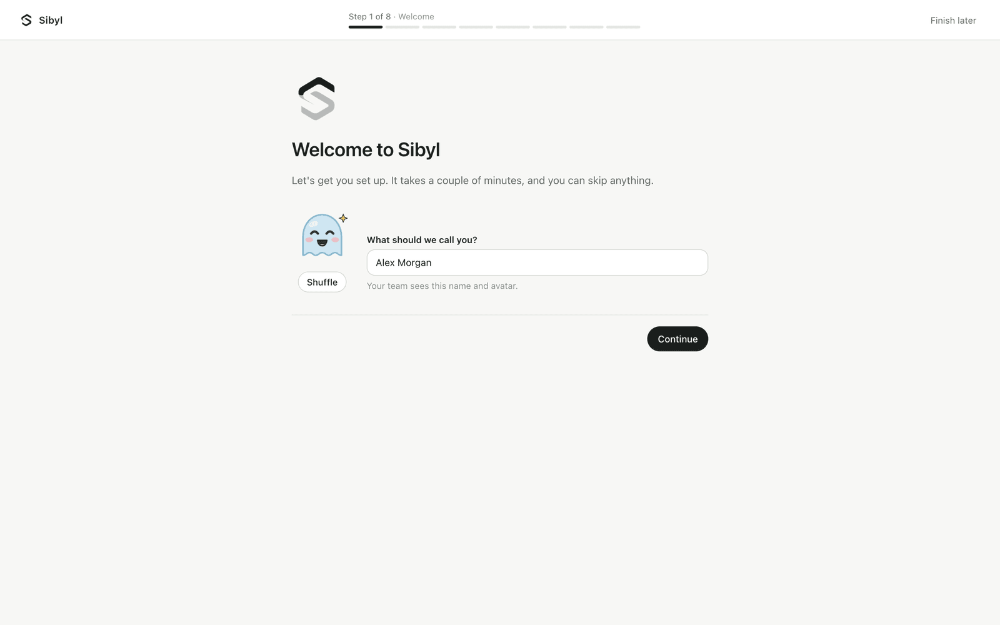
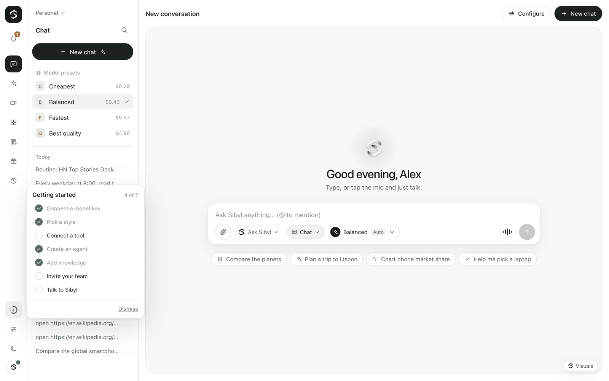

Getting started
This guide takes you from a fresh clone to a spoken conversation with Sibyl on your own machine.
What you need
- Node.js 22.13 or newer. Check with
node --version. - pnpm, through corepack. Corepack ships with Node and installs the exact pnpm version the repository pins (
packageManagerinpackage.json). You do not need a global pnpm. - An OpenRouter API key. Create one at https://openrouter.ai/keys and add a little credit. One key covers chat, transcription and speech.
- A browser with a microphone. Chrome or Edge is recommended; see Browser support.
1. Install
git clone https://github.com/Suryanandx/sibyl.git
cd sibyl
corepack enable
corepack pnpm installcorepack enable puts the right pnpm on your PATH, and the project's scripts rely on it (they call pnpm themselves). If it needs permissions you don't have, install pnpm 11 another way instead, for example npm install -g pnpm@11, and run the commands without the corepack prefix.
Node.js 25 and newer no longer include corepack. Install it once with npm install -g corepack, then run corepack enable.
If pnpm fails with "No such file or directory" even after corepack enable, an older global pnpm earlier on your PATH is shadowing it; run which -a pnpm to find it, and remove it or move it later on your PATH.
2. Configure
cp .env.example .envOpen .env and set your key:
OPENROUTER_API_KEY=sk-or-...That is all you need. The rest of .env.example already holds sensible defaults. Every variable is documented in Configuration.
Optionally, copy the model allowlist so you can edit it:
cp models.config.example.json models.config.jsonWithout a models.config.json, the gateway falls back to models.config.example.json. Models listed in either file stay available next to the scout's picks, marked "pinned". See Models and costs.
3. Run
corepack pnpm devThis starts both processes:
| Process | URL |
|---|---|
| Web app | http://localhost:3000 |
| Gateway WebSocket | ws://localhost:8787 |
| Gateway health check | http://localhost:8787/healthz |
On the first start the model scout reads the OpenRouter catalog and measures latency in the background. This takes about a minute and sends a few dozen small paid requests. Sibyl works immediately on the models from your config file and switches to the scout's picks when they are ready; connected sessions update live. The result is cached for 24 hours in .model-scout.json, relative to the gateway's working directory (apps/gateway during development), so later starts are instant.
4. First run: owner account and setup
Open http://localhost:3000. The first time, Sibyl asks you to create the owner account (name, email, password). If you set SIBYL_OWNER_TOKEN, enter it there too. Just you on this computer? Choose Continue without an account; you can add one later.

Then a short setup starts. Each step is one screen with its own address (/welcome/<step>), so Back and Forward work, and Skip is on every optional step:
- Welcome — your name and the face (avatar) people see. Shuffle until you like it.
- Model access — with
OPENROUTER_API_KEYin.envthis says "Already set up by your server". Otherwise paste an OpenRouter key: Sibyl checks it right away and shows its limit and what is left. - Pick a style — Cheapest, Balanced, Fastest or Best quality, with the price for typing and for talking. Balanced is chosen for you.
- Connect your tools (optional) — Google, Microsoft or Slack, one click each once the server has their apps (Integrations (native connectors)).
- Your first agent (optional) — start from a template; it gets its own face.
- Add knowledge (optional) — drop files or a folder. Sibyl answers from them and shows where each answer came from.
- Invite your team (optional) — by email, or copy the link.
- First conversation — suggestions built from what you connected and added, and a hint to try talking.
Finish later leaves setup; it picks up where you were, on any device. People you invite get the same setup, without the steps they can't do (a member doesn't set the model key or invite people).
Getting started checklist
Until you finish or dismiss it, a ring in the left rail shows how far along you are (on a phone it is in the menu). Open it for the list: connect a model key, pick a style, connect a tool, create an agent, add knowledge, invite your team, talk to Sibyl. Each item opens the right screen and ticks itself when the thing is really done, wherever you did it.

5. Talk or type
- Typing: use the composer. You get a normal chat reply with text and visuals, and nothing is read aloud. Messages you send while Sibyl is still answering join a queue; you can reorder, edit or remove them before they go.
- Hands-free voice: tap the mic button and allow microphone access. Wait a moment while Sibyl calibrates to the room noise, then speak normally. Sibyl replies out loud when you pause. Talk over it to interrupt. Tap again to end voice mode.
- Push-to-talk: press and hold the mic button, speak, release.
Typing and talking share one conversation, so you can switch at any time.
Try something that benefits from a visual, such as "compare three weekend trips from Berlin under 300 euros", or something that needs fresh information, such as "what's the weather in Lisbon this weekend?". The deep brain uses its tools, then answers with a table or plan. In voice mode, the voice acknowledges you first and a short spoken summary follows the visual.
Conversations are saved on the gateway. Open one from the history in the sidebar to carry on where you left off, with its full context.
6. Choose models
The pill in the composer opens the model menu: pick a preset or search for a specific model. Settings (bottom of the rail; Settings → Models, Voice, Usage, Diagnostics) covers:
- Presets — Cheapest, Balanced, Fastest and Best quality, each with its models and estimated cost per 100 turns.
- Models — the voice brain, the deep work model and the transcription model, with price, measured speed and benchmark score.
- Voice — speak replies aloud, the voice model and voice, and visual answers on or off.
- Usage — what you have spent today, this month and in this session, and your budgets.
- Diagnostics — per-turn latency and the voice activity detector's live state.
Your choices are saved in the browser and re-applied when you reconnect. A model you pick yourself always wins over the scout's choice.
Next steps
- Understand the live conversation and its timings: Voice.
- Connect your own tools and data with MCP: Tools, MCP and approvals.
- Tune the scout or pin models: Models and costs.
- Deploy with Docker behind HTTPS: Deployment.
- Something not working: Troubleshooting.